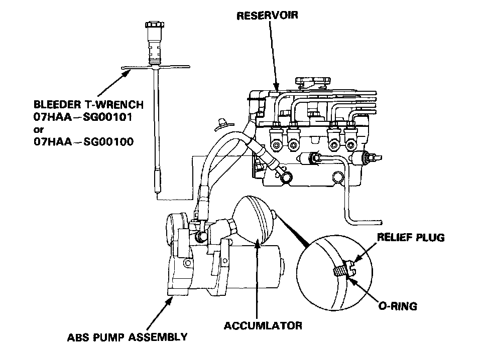

DTC 1-8

Diagnostic Trouble Code (DTC) 1-8: Accumulator Gas Leakage
Check the following items:
- The relief plug is loose.
- The relief plug 0-ring is out of place.
- Bleed the high pressure line with the Bleeder T-wrench. Operate the ABS pump motor for 10 seconds and bleed the high pressure line again with the Bleeder T-wrench. If no fluid or more than 70 cc of fluid come out, replace the ABS pump assembly.